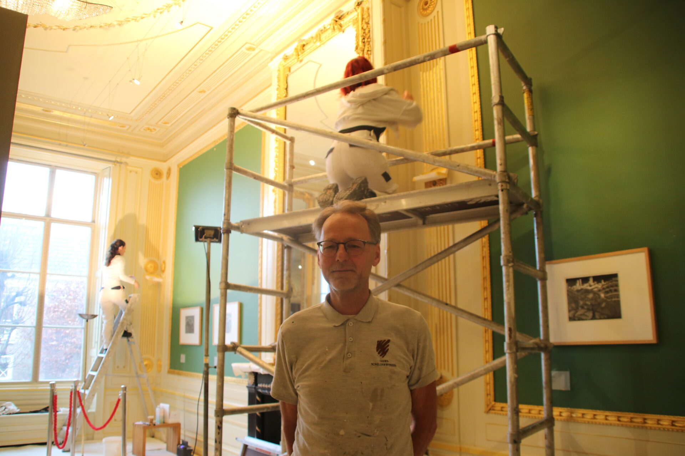

Om half 6 opgestaan om op tijd klaar te zijn. Ik had van te voren gevraagd hoe laat ik waar moest zijn. Dat was om half 8 bij station leidschendam voorburg. Ik was om er om kwart over 7, ruim op tijd dus. Ik werd ietjes later opgehaald, omdat er een vrachtwagen vast kwam te zitten onder het station. Eenmaal aangekomen gingen we eerst koffie drinken en kennis maken met de rest van het personeel. ik kreeg toen ook te horen dat ik deze dag op de werkplaats zou blijven met Nadine. Ik ging de luiken/deuren(die dingen waren zowat net zo groot als ik) schuren. Ik heb er uiteindelijk 7,5 van af gekregen na een hele dag schuren. Daarna ging ik naar huis
ik mocht vandaag met Timo mee, naar Leiden. Dinsdag stond ik ook met Nadine, maar toen heb ik de deuren gegrond terwijl Nadine schuurde. Ik had overigens wel gezegd dat we konden afwisselen. Ik mocht ook wat later beginnen, maar dat was wat laat aangegeven waardoor ik s'ochtends wat te vroeg was opgestaan. Ik heb vandaag de muren en plafond geschilderd. De muren met de kwast en roller, maar het plafond alleen met de roller. verder heb ik een zijkant van een kast gerepareerd en de plinten geschuurd. Het was heel gezellig met Timo en Jasmijn, maar we hebben ook hard gewerkt. Morgen sta ik weer op de werkplaats.
alle luiken aan de ene kant gegrond en de helft beide kanten.
Vandaag stond ik met Lila en Ruud Geers bij een gallerie in Den Haag. Lila en ik hebben het plafond gerepareerd terwijl Ruud het plafond in de andere kamer schilderde. Daarna hebben Lila en ik die kamer opgeruimd. En na de lunch die andere kamer.
naam: Alyssa Sikma
tel:0629844061
naam: Jos van den Akker
tel:0619959932
naam:Ruud Geers
tel:+31703836295